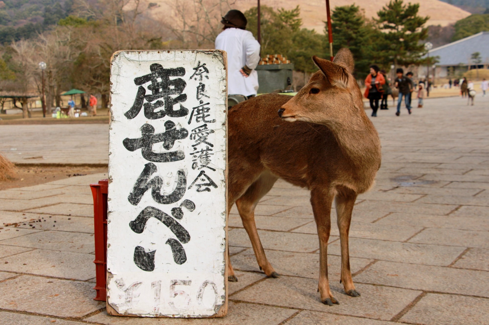

寥 落 古 行 宮 ， 宮 花 寂 寞 紅 。
白 頭 宮 女 在 ， 閒 坐 說 玄 宗 。
元稹:行宮

王之渙:登鸛鵲樓
白 日 依 山 盡 ， 黃 河 入 海 流 。
欲 窮 千 里 目 ， 更 上 一 層 樓 。
欲 窮 千 里 目 ， 更 上 一 層 樓 。

王維:相思
紅 豆 生 南 國 ， 春 來 發 幾 枝 ？
願 君 多 采 擷 ， 此 物 最 相 思 。
願 君 多 采 擷 ， 此 物 最 相 思 。

王維:鹿柴
空 山 不 見 人 ， 但 聞 人 語 響 。
返 景 入 深 林 ， 復 照 青 苔 上 。
返 景 入 深 林 ， 復 照 青 苔 上 。
王維:送別
山 中 相 送 罷 ， 日 暮 掩 柴 扉 。
春 草 明 年 綠 ， 王 孫 歸 不 歸 。
春 草 明 年 綠 ， 王 孫 歸 不 歸 。